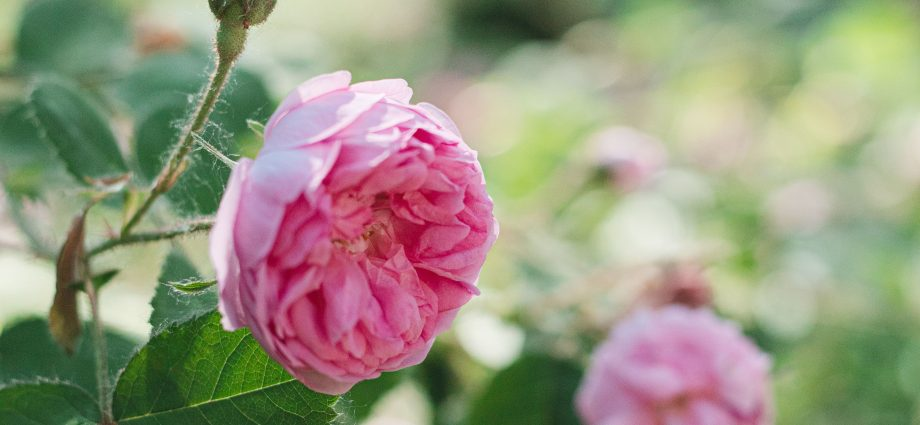
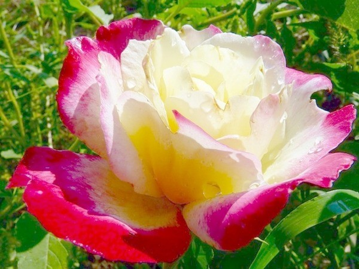
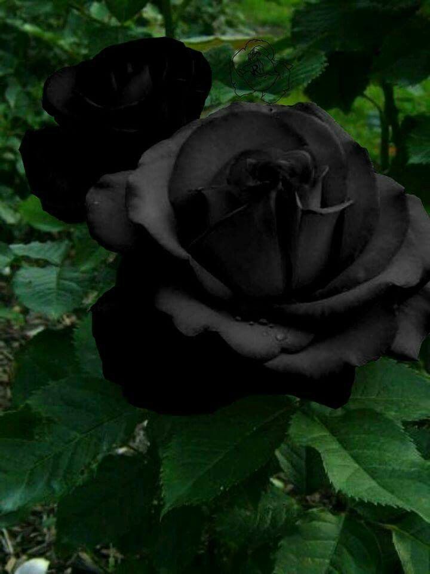

Qızılgülün növləri
Qızılgül düz 5000 il bundan əvvəl Asiyada yetişdirilməyə başlayıb.
Qızılgülün əcdadı yabanı qızilgüllər hesab edilən itburnu
çiçəkləridir. Bu yabanı qızılgüllər, daha qədimdən yaranıb və
yayılıblar. Sonralar insanlar bu yabanı növdən seleksiya yolu ilə
daha gözəl və ətirli növlər almağa başlayıblar.Qızılgülün vətəni
deyilənə görə Persiyadır (qədim İran). Bundan əlavə arxeoloqlar
Yaxın Şərqdə yaşı 4000 ilə yaxın olan qızılgül çiçəklərindən
hörülmüş girlyand təsvirli freskalar (divar naxışları) aşkar
ediblər. Bu fakt göstərir ki, qızılgülləri qədim Hindistanda və
Çində də becəriblər. Çinlilər qızılgülü 5 min il əvvəl yetişdirməyə
başlayıblar. Onlar bayram günləri qonaqların başına gül ləçəkləri
səpirdilər. Qədim Çin yazılı ədəbiyyatında qızılgül romantikanın
simvolu, sehirli gül kimi təqdim olunub.
867-ci ildə “La France” növünün əldə edilməsi ilə qızılgül tarixində
dönüş mərhələsi başlayır. Bu sort çay və remontant qrupunun ən yaxşı
keyfiyyətlərini cəmləşdirməklə yeni çay-hibrid (Hybrid Tea) qrupunun
yaranmasına səbəb oldu və təkrar çiçək açmaq qabiliyyəti ilk dəfə bu
güllərdə meydana gəldi. XIX əsrdə bir çox ölkələrdə bu qızılgüllərin
seleksiyasına başlanıldı. Və minlərlə zərif, çoxləçəkli, müxtəlif
rəngli sortlar alındı. 150 ilə yaxın vaxt keçməsinə baxmayaraq, indi
də bu qrupdan olan sortlar yaşıllaşdırma və bəzək-bağçılıqda geniş
istifadə olunur.
Clair Renaissance
Sülh gülləri, rəsmi olaraq Rosa 'Madam A. Meilland', tanınmış və müvəffəqiyyətli bir bağ gülüdür. 1992-ci ilə qədər bu hibrid çayın yüz milyondan çox bitkisi satılmışdı. Kultivarda yüngül sarıdan krem rənginə qədər iri çiçəklər var. Onlar xırda-çəhrayı rəngli petal kənarlarına bir qədər axıblar. Sərt və gümrahdır, xəstəliklərə nisbətən müqavimət göstərir, onu bağlarda, eləcə də çiçək ticarətində məşhur edir. 1935-1939-cu illərdə fransız xortdanı Fransis Meylend tərəfindən inkişaf etmişdir. Meilland Almanların Fransanı işğal edəcəyini qabaqcadan görərkən yeni gülün qorunması üçün İtaliya, Türkiyə, Almaniya və ABŞ-dakı dostlarına kəsicilər göndərdi. Qeyd olunur ki, alman işğalından əvvəl mövcud olan son təyyarə ilə ABŞ-a göndərilib. Müharibə zamanı conard Pyle Co. tərəfindən təhlükəsiz şəkildə propaqlyasiya edilib. [1] Almanlar isə bu sortu “Gloria dei” (Allahın möcüzəsi) adlandırırlar.
"Double Delight" çeşidi xoş güclü aroması və iki rəngli rəngi ilə tanınır - kremli mərkəzli qoşa çiçəkləri qırmızı haşiyəyə malikdir, eni və rəng intensivliyi çiçəkləmə zamanı alınan ultrabənövşəyi şüaların miqdarından asılıdır. Tünd yaşıl parlaq yarpaqları olan 90 sm hündürlüyə qədər bir kol ümumiyyətlə müxtəlif rəngli çoxlu çiçəklərlə örtülmüşdür - axırda biri daha çox günəş, digəri daha azdır. Şüşə arxasında qapalı yerdə böyüdükdə, bütün çiçəklər qırmızı əlaməti olmayan xoş krem rənginə malikdir. Çiçəyin rəngini dəyişdirən başqa bir çeşid - "Cənnət". Ləçəklərin qırmızımtıl kənarı olan gümüşü-lavanda qönçəsi açıq qırmızıya çevrilir və ortası lavanda olaraq qalır. Nicole çeşidinin böyük ikiqat çiçəkləri ləçəklərin tünd qırmızı yuxarı hissəsi ilə gözü sevindirir, aşağı hissəsi bir az çəhrayı kənarları ilə demək olar ki, ağdır.

Blue Moon çeşidi çox populyardır, onun böyük qoşa çiçəkləri
mavidən daha çox yasəməndir. Yay sakinlərimiz Red Velvet çeşidini
sevirlər. Hündür, iki metrə qədər, tünd yaşıl parlaq yarpaqları
olan kollar möhtəşəm böyük ikiqat tünd qırmızı çiçəklərlə
bəzədilmişdir.
Uzun və bol çiçəklənən "Dallas" çeşidi uzun pedunclelərdə böyük
ikiqat çiçəklərlə fərqlənir. Onların rəngi tünd qırmızıdır və
yuvarlaqlaşdırılmış ləçəklər onları mümkün qədər yığcam şəkildə
qatlamağa çalışırmış kimi görünür. Hətta ortası görünəndə belə
görünür ki, çiçək hələ tam açılmayıb.
Ağ qızılgüllər arasında Virciniya çeşidi xüsusilə məşhurdur, onun
orta ölçülü konus formalı qönçəsi cəmi 31 ləçəkdən ibarətdir və
çiçək açan çiçək qiymətli kağızdan kəsilmiş kimi görünür. Gövdəsi
kiçik tikanlarla örtülmüş, yarpaqları tünd yaşıl və çox sıxdır.
"Eyfel qülləsi" çeşidinin çəhrayı çiçəkləri uzun və iti,
yarpaqları açıq yaşıl, tutqundur. Kol çox dekorativ görünür, həm
də mantar xəstəliklərinə davamlıdır.
Çəhrayı ləkələri olan kremli Bella Pearl çiçəyi çox zərif görünür.
Tikanlı kol bir metrə qədər böyüyür, 9 sm diametrli çiçəklər onu
bolca örtür, qısa bir fasilədən sonra çiçəkləmə təkrarlanır.


